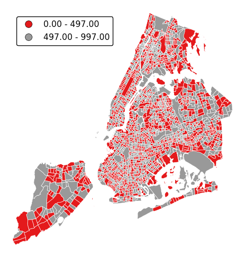

geoplot package¶
Submodules¶
geoplot.crs module¶
This module defines the geoplot coordinate reference system classes, wrappers on cartopy.crs objects meant
to be used as parameters to the projection parameter of all front-end geoplot outputs.
This was necessary because cartopy.crs objects do not allow modifications in place. cf.
http://stackoverflow.com/questions/40822241/seemingly-immutable-dict-in-object-instance/40822473
For the list of Cartopy CRS objects this module derives from, refer to http://scitools.org.uk/cartopy/docs/latest/crs/projections.html
geoplot.geoplot module¶
This module defines the majority of geoplot functions, including all plot types.
-
geoplot.geoplot.aggplot(df, projection=None, hue=None, by=None, geometry=None, nmax=None, nmin=None, nsig=0, agg=<function mean>, cmap='viridis', vmin=None, vmax=None, legend=True, legend_kwargs=None, extent=None, figsize=(8, 6), ax=None, **kwargs)¶ A minimum-expectations summary plot type which handles mixes of geometry types and missing aggregate geometry data.
Parameters: - df (GeoDataFrame) – The data being plotted.
- projection (geoplot.crs object instance, optional) – A geographic projection. Must be an instance of an object in the
geoplot.crsmodule, e.g.geoplot.crs.PlateCarree(). This parameter is optional: if left unspecified, a pure unprojectedmatplotlibobject will be returned. For more information refer to the tutorial page on projections. - hue (None, Series, GeoSeries, iterable, or str, optional) – The data column whose entries are being discretely colorized. May be passed in any of a number of flexible formats. Defaults to None, in which case no colormap will be applied at all.
- by (iterable or str, optional) – The name of a column within the dataset corresponding with some sort of geometry to aggregate points by.
Specifying
bykicksaggplotinto convex hull plotting mode. - geometry (GeoDataFrame or GeoSeries, optional) – A
geopandasobject containing geometries. When bothbyandgeometryare providedaggplotplots in geometry plotting mode, matching points in thebycolumn with the geometries given by their index label in thegeometrycolumn, aggregating those, and plotting the results. - nmax (int or None, optional) – This variable will only be used if the plot is functioning in quadtree mode. It specifies the
maximum number of observations that will be contained in each quadrangle; any quadrangle containing more
than
nmaxobservations will be forcefully partitioned.nmaxmay be left unspecified, in which case no maximum splitting rule will be used. - nmin (int, optional) – This variable will only be used if the plot is functioning in quadtree mode. It specifies the minimum number of observations that must be present in each quadtree split for the split to be followed through. For example, if we specify a value of 5, partition a quadrangle, and find that it contains a subquadrangle with just 4 points inside, this rule will cause the algorithm to return the parent quadrangle instead of its children.
- nsig (int, optional) – A floor on the number of observations in an aggregation that gets reported. Aggregations containing fewer than
nsigpoints are not aggregated and are instead returned as white patches, indicative of their status as “empty” spaces. Defaults to 0. - agg (function, optional) – The aggregation ufunc that will be applied to the
numpyarray of values for the variable of interest of observations inside of each quadrangle. Defaults tonp.mean. - cmap (matplotlib color, optional) – The string representation for a matplotlib colormap to be applied to this dataset.
huemust be non-empty for a colormap to be applied at all, so this parameter is ignored otherwise. - vmin (float, optional) – A strict floor on the value associated with the “bottom” of the colormap spectrum. Data column entries whose value is below this level will all be colored by the same threshold value.
- vmax (float, optional) – A strict ceiling on the value associated with the “top” of the colormap spectrum. Data column entries whose value is above this level will all be colored by the same threshold value.
- legend (boolean, optional) – Whether or not to include a legend in the output plot. This parameter will be ignored if
hueis set to None or left unspecified. - legend_kwargs (dict, optional) – Keyword arguments to be passed to the
matplotlibax.colorbarmethod (ref). - figsize (tuple, optional) – An (x, y) tuple passed to
matplotlib.figurewhich sets the size, in inches, of the resultant plot. Defaults to (8, 6), thematplotlibdefault global. - gridlines (boolean, optional) – Whether or not to overlay cartopy’s computed latitude-longitude gridlines.
- extent (None or (minx, maxx, miny, maxy), optional) – If this parameter is set to None (default) this method will calculate its own cartographic display region. If an extrema tuple is passed—useful if you want to focus on a particular area, for example, or exclude certain outliers—that input will be used instead.
- ax (AxesSubplot or GeoAxesSubplot instance, optional) – A
matplotlib.axes.AxesSubplotorcartopy.mpl.geoaxes.GeoAxesSubplotinstance onto which this plot will be graphed. If this parameter is left undefined a new axis will be created and used instead. - kwargs (dict, optional) –
Keyword arguments to be passed to the underlying
matplotlib.patches.Polygoninstances (ref).
Returns: The axis object with the plot on it.
Return type: AxesSubplot or GeoAxesSubplot instance
Examples
This plot type accepts any geometry, including mixtures of polygons and points, averages the value of a certain data parameter at their centroids, and plots the result, using a colormap is the visual variable.
For the purposes of comparison, this library’s
choroplethfunction takes some sort of data as input, polygons as geospatial context, and combines themselves into a colorful map. This is useful if, for example, you have data on the amount of crimes committed per neigborhood, and you want to plot that.But suppose your original dataset came in terms of individual observations - instead of “n collisions happened in this neighborhood”, you have “one collision occured at this specific coordinate at this specific date”. This is obviously more useful data - it can be made to do more things - but in order to generate the same map, you will first have to do all of the work of geolocating your points to neighborhoods (not trivial), then aggregating them (by, in this case, taking a count).
aggplothandles this work for you. It takes input in the form of observations, and outputs as useful as possible a visualization of their “regional” statistics. What a “region” corresponds to depends on how much geospatial information you can provide.If you can’t provide any geospatial context,
aggplotwill output what’s known as a quadtree: it will break your data down into recursive squares, and use them to aggregate the data. This is a very experimental format, is very fiddly to make, and has not yet been optimized for speed; but it provides a useful baseline which requires no additional work and can be used to expose interesting geospatial correlations right away. And, if you have enough observations, it can be a pretty good approximation (collisions in New York City pictured).Our first few examples are of just such figures. A simple
aggplotquadtree can be generated with just a dataset, a data column of interest, and, optionally, a projection.import geoplot as gplt import geoplot.crs as gcrs gplt.aggplot(collisions, projection=gcrs.PlateCarree(), hue='LATDEP')

To get the best output, you often need to tweak the
nminandnmaxparameters, controlling the minimum and maximum number of observations per box, respectively, yourself. In this case we’ll also choose a different matplotlib colormap, using thecmapparameter.gplt.aggplot(collisions, nmin=20, nmax=500, projection=gcrs.PlateCarree(), hue='LATDEP', cmap='Blues')

aggplotwill satisfy thenmaxparameter before trying to satisfynmin, so you may result in spaces without observations, or ones lacking a statistically significant number of observations. This is necessary in order to break up “spaces” that the algorithm would otherwise end on. You can control the maximum number of observations in the blank spaces using thensigparameter.gplt.aggplot(collisions, nmin=20, nmax=500, nsig=5, projection=gcrs.PlateCarree(), hue='LATDEP', cmap='Reds')

You’ll have to play around with these parameters to get the clearest picture.
Usually, however, observations with a geospatial component will be provided with some form of spatial categorization. In the case of our collisions example, this comes in the form of a postal zip code. With the simple addition of this data column via the
byparameter, our output changes radically, taking advantage of the additional context we now have to sort and aggregate our observations by (hopefully) geospatially meaningful, if still crude, grouped convex hulls.gplt.aggplot(collisions, projection=gcrs.PlateCarree(), hue='NUMBER OF PERSONS INJURED', cmap='Reds', by='BOROUGH')

Finally, suppose you actually know exactly the geometries that you would like to aggregate by. Provide these in the form of a
geopandasGeoSeries, one whose index matches the values in yourbycolumn (soBROOKLYNmatchesBROOKLYNfor example), to thegeometryparameter. Your output will now be an ordinary choropleth.gplt.aggplot(collisions, projection=gcrs.PlateCarree(), hue='NUMBER OF PERSONS INJURED', cmap='Reds', by='BOROUGH', geometry=boroughs)

Observations will be aggregated by average, by default. In our example case, our plot shows that accidents in Manhattan tend to result in significantly fewer injuries than accidents occuring in other boroughs.
Choose which aggregation to use by passing a function to the
aggparameter.gplt.aggplot(collisions, projection=gcrs.PlateCarree(), hue='NUMBER OF PERSONS INJURED', cmap='Reds', geometry=boroughs_2, by='BOROUGH', agg=len)

legendtoggles the legend.gplt.aggplot(collisions, projection=gcrs.PlateCarree(), hue='NUMBER OF PERSONS INJURED', cmap='Reds', geometry=boroughs_2, by='BOROUGH', agg=len, legend=False)

Additional keyword arguments are passed to the underlying
matplotlib.patches.Polygoninstances (ref).gplt.aggplot(collisions, projection=gcrs.PlateCarree(), hue='NUMBER OF PERSONS INJURED', cmap='Reds', geometry=boroughs_2, by='BOROUGH', agg=len, linewidth=0)

Additional keyword arguments for styling the colorbar legend are passed using
legend_kwargs.gplt.aggplot(collisions, projection=gcrs.PlateCarree(), hue='NUMBER OF PERSONS INJURED', cmap='Reds', geometry=boroughs_2, by='BOROUGH', agg=len, linewidth=0, legend_kwargs={'orientation': 'horizontal'})

{kind=link}
-
geoplot.geoplot.cartogram(df, projection=None, scale=None, limits=(0.2, 1), scale_func=None, trace=True, trace_kwargs=None, hue=None, categorical=False, scheme=None, k=5, cmap='viridis', vmin=None, vmax=None, legend=False, legend_values=None, legend_labels=None, legend_kwargs=None, legend_var='scale', extent=None, figsize=(8, 6), ax=None, **kwargs)¶ This plot scales the size of polygonal inputs based on the value of a particular data parameter.
Parameters: - df (GeoDataFrame) – The data being plotted.
- projection (geoplot.crs object instance, optional) –
A geographic projection. Must be an instance of an object in the
geoplot.crsmodule, e.g.geoplot.crs.PlateCarree(). This parameter is optional: if left unspecified, a pure unprojectedmatplotlibobject will be returned. For more information refer to the tutorial page on projections. - scale (str or iterable) – A data column whose values will be used to scale the points.
- limits ((min, max) tuple, optional) – The minimum and maximum limits against which the shape will be scaled. Ignored if
scaleis not specified. - scale_func (ufunc, optional) – The function used to scale point sizes. This should be a factory function of two variables, the minimum and maximum values in the dataset, which returns a scaling function which will be applied to the rest of the data. Defaults to a linear scale. A demo is available in the example gallery.
- trace (boolean, optional) – Whether or not to include a trace of the polygon’s original outline in the plot result.
- trace_kwargs (dict, optional) – If
traceis set toTrue, this parameter can be used to adjust the properties of the trace outline. This parameter is ignored if trace isFalse. - hue (None, Series, GeoSeries, iterable, or str, optional) – A data column whose values are to be colorized. Defaults to None, in which case no colormap will be applied.
- categorical (boolean, optional) – Specify this variable to be
Trueifhuepoints to a categorical variable. Defaults to False. Ignored ifhueis set to None or not specified. - scheme (None or {"Quantiles"|"Equal_interval"|"Fisher_Jenks"}, optional) – The scheme which will be used to determine categorical bins for the
huechoropleth. Ifhueis left unspecified or set to None this variable is ignored. - k (int or None, optional) – If
hueis specified andcategoricalis False, this number, set to 5 by default, will determine how many bins will exist in the output visualization. Ifhueis specified and this variable is set toNone, a continuous colormap will be used. Ifhueis left unspecified or set to None this variable is ignored. - cmap (matplotlib color, optional) –
The matplotlib colormap to be applied to this dataset (ref). This parameter is ignored if
hueis not specified. - vmin (float, optional) – The value that “bottoms out” the colormap. Data column entries whose value is below this level will be colored the same threshold value. Defaults to the minimum value in the dataset.
- vmax (float, optional) – The value that “tops out” the colormap. Data column entries whose value is above this level will be colored the same threshold value. Defaults to the maximum value in the dataset.
- legend (boolean, optional) – Whether or not to include a legend in the output plot.
- legend_values (list, optional) – Equal intervals will be used for the “points” in the legend by default. However, particularly if your scale is non-linear, oftentimes this isn’t what you want. If this variable is provided as well, the values included in the input will be used by the legend instead.
- legend_labels (list, optional) – If a legend is specified, this parameter can be used to control what names will be attached to the values.
- legend_var ("hue" or "scale", optional) – The name of the visual variable for which a legend will be displayed. Does nothing if
legendis False or multiple variables aren’t used simultaneously. - legend_kwargs (dict, optional) –
Keyword arguments to be passed to the underlying
matplotlib.pyplot.legendinstance (ref). - extent (None or (minx, maxx, miny, maxy), optional) – If this parameter is unset
geoplotwill calculate the plot limits. If an extrema tuple is passed, that input will be used instead. - figsize (tuple, optional) – An (x, y) tuple passed to
matplotlib.figurewhich sets the size, in inches, of the resultant plot. Defaults to (8, 6), thematplotlibdefault global. - ax (AxesSubplot or GeoAxesSubplot instance, optional) – A
matplotlib.axes.AxesSubplotorcartopy.mpl.geoaxes.GeoAxesSubplotinstance onto which this plot will be graphed. If this parameter is left undefined a new axis will be created and used instead. - kwargs (dict, optional) –
Keyword arguments to be passed to the underlying
matplotlib.patches.Polygoninstances (ref).
Returns: The axis object with the plot on it.
Return type: GeoAxesSubplot instance
Examples
A cartogram is a plot type which ingests a series of enclosed shapes (
shapelyPolygonorMultiPolygonentities, in thegeoplotexample) and spits out a view of these shapes in which area is distorted according to the size of some parameter of interest. These are two types of cartograms, contiguous and non-contiguous ones; only the former is implemented ingeoplotat the moment.A basic cartogram specifies data, a projection, and a
scaleparameter.import geoplot as gplt import geoplot.crs as gcrs gplt.cartogram(boroughs, scale='Population Density', projection=gcrs.AlbersEqualArea())

The gray outline can be turned off by specifying
trace, and a legend can be added by specifyinglegend.gplt.cartogram(boroughs, scale='Population Density', projection=gcrs.AlbersEqualArea(), trace=False, legend=True)

Keyword arguments can be passed to the legend using the
legend_kwargsargument. These arguments, often necessary to properly position the legend, will be passed to the underlying `matplotlib Legend instance http://matplotlib.org/api/legend_api.html#matplotlib.legend.Legend`_.gplt.cartogram(boroughs, scale='Population Density', projection=gcrs.AlbersEqualArea(), trace=False, legend=True, legend_kwargs={'loc': 'upper left'})

Specify an alternative legend display using the
legend_valuesandlegend_labelsparameters.gplt.cartogram(boroughs, scale='Population Density', projection=gcrs.AlbersEqualArea(), legend=True, legend_values=[2.32779655e-07, 6.39683197e-07, 1.01364661e-06, 1.17380941e-06, 2.33642596e-06][::-1], legend_labels=['Manhattan', 'Brooklyn', 'Queens', 'The Bronx', 'Staten Island'], legend_kwargs={'loc': 'upper left'})
Additional arguments to
cartogramwill be interpreted as keyword arguments for the scaled polygons, using matplotlib Polygon patch rules.gplt.cartogram(boroughs, scale='Population Density', projection=gcrs.AlbersEqualArea(), edgecolor='darkgreen')

Manipulate the outlines use the
trace_kwargsargument, which accepts the same matplotlib Polygon patch parameters.gplt.cartogram(boroughs, scale='Population Density', projection=gcrs.AlbersEqualArea(), trace_kwargs={'edgecolor': 'lightgreen'})

By default, the polygons will be scaled according to the data such that the minimum value is scaled by a factor of 0.2 while the largest value is left unchanged. Adjust this using the
limitsparameter.gplt.cartogram(boroughs, scale='Population Density', projection=gcrs.AlbersEqualArea(), limits=(0.5, 1))

The default scaling function is linear: an observations at the midpoint of two others will be exactly midway between them in size. To specify an alternative scaling function, use the
scale_funcparameter. This should be a factory function of two variables which, when given the maximum and minimum of the dataset, returns a scaling function which will be applied to the rest of the data. A demo is available in the example gallery.def trivial_scale(minval, maxval): def scalar(val): return 0.5 return scalar gplt.cartogram(boroughs, scale='Population Density', projection=gcrs.AlbersEqualArea(), limits=(0.5, 1), scale_func=trivial_scale)

cartogramalso provides the samehuevisual variable parameters provided by e.g.pointplot. Although it’s possible forhueandscaleto refer to different aspects of the data, it’s strongly recommended to use the same data column for both. For more information onhue-related arguments, refer to e.g. thepointplotdocumentation.gplt.cartogram(boroughs, scale='Population Density', projection=gcrs.AlbersEqualArea(), hue='Population Density', k=None, cmap='Blues')

-
geoplot.geoplot.choropleth(df, projection=None, hue=None, scheme=None, k=5, cmap='Set1', categorical=False, vmin=None, vmax=None, legend=False, legend_kwargs=None, legend_labels=None, extent=None, figsize=(8, 6), ax=None, **kwargs)¶ A simple aggregation plot based on geometry.
Parameters: - df (GeoDataFrame) – The data being plotted.
- projection (geoplot.crs object instance, optional) –
A geographic projection. Must be an instance of an object in the
geoplot.crsmodule, e.g.geoplot.crs.PlateCarree(). This parameter is optional: if left unspecified, a pure unprojectedmatplotlibobject will be returned. For more information refer to the tutorial page on projections. - hue (None, Series, GeoSeries, iterable, or str) – A data column whose values are to be colorized. Defaults to None, in which case no colormap will be applied.
- categorical (boolean, optional) – Specify this variable to be
Trueifhuepoints to a categorical variable. Defaults to False. Ignored ifhueis set to None or not specified. - scheme (None or {"Quantiles"|"Equal_interval"|"Fisher_Jenks"}, optional) – The scheme which will be used to determine categorical bins for the
huechoropleth. Ifhueis left unspecified or set to None this variable is ignored. - k (int or None, optional) – If
categoricalis False or left unspecified, this number, set to 5 by default, will determine how many bins will exist in the output visualization. If this variable is set toNone, a continuous colormap will be used. - cmap (matplotlib color, optional) –
The matplotlib colormap to be applied to this dataset (ref). Defaults to
viridis. - vmin (float, optional) – The value that “bottoms out” the colormap. Data column entries whose value is below this level will be colored the same threshold value. Defaults to the minimum value in the dataset.
- vmax (float, optional) – The value that “tops out” the colormap. Data column entries whose value is above this level will be colored the same threshold value. Defaults to the maximum value in the dataset.
- legend (boolean, optional) – Whether or not to include a legend in the output plot.
- legend_values (list, optional) – Equal intervals will be used for the “points” in the legend by default. However, particularly if your scale is non-linear, oftentimes this isn’t what you want. If this variable is provided as well, the values included in the input will be used by the legend instead.
- legend_labels (list, optional) – If a legend is specified, this parameter can be used to control what names will be attached to the values.
- legend_kwargs (dict, optional) –
Keyword arguments to be passed to the underlying
matplotlib.pyplot.legendinstance (ref). - extent (None or (minx, maxx, miny, maxy), optional) – If this parameter is unset
geoplotwill calculate the plot limits. If an extrema tuple is passed, that input will be used instead. - figsize (tuple, optional) – An (x, y) tuple passed to
matplotlib.figurewhich sets the size, in inches, of the resultant plot. Defaults to (8, 6), thematplotlibdefault global. - ax (AxesSubplot or GeoAxesSubplot instance, optional) – A
matplotlib.axes.AxesSubplotorcartopy.mpl.geoaxes.GeoAxesSubplotinstance onto which this plot will be graphed. If this parameter is left undefined a new axis will be created and used instead. - kwargs (dict, optional) –
Keyword arguments to be passed to the underlying
matplotlib.patches.Polygoninstances (ref).
Returns: The axis object with the plot on it.
Return type: AxesSubplot or GeoAxesSubplot instance
Examples
The choropleth is a standard-bearer of the field. To make one yourself, you will need a series of enclosed areas, consisting of
shapelyPolygonorMultiPolygonentities, and a series of data about them that you would like to express in color. A basic choropleth requires geometry, ahuevariable, and, optionally, a projection.import geoplot as gplt import geoplot.crs as gcrs gplt.choropleth(polydata, hue='latdep', projection=gcrs.PlateCarree())

Change the colormap with the
cmapparameter.gplt.choropleth(polydata, hue='latdep', projection=gcrs.PlateCarree(), cmap='Blues')

If your variable of interest is already categorical, you can specify
categorical=Trueto use the labels in your dataset directly.gplt.choropleth(boroughs, projection=gcrs.AlbersEqualArea(), hue='BoroName', categorical=True)

To add a legend, specify
legend.gplt.choropleth(boroughs, projection=gcrs.AlbersEqualArea(), hue='BoroName', categorical=True, legend=True)

Keyword arguments can be passed to the legend using the
legend_kwargsargument. These arguments, often necessary to properly position the legend, will be passed to the underlying matplotlib Legend instance.gplt.choropleth(boroughs, projection=gcrs.AlbersEqualArea(), hue='BoroName', categorical=True, legend=True, legend_kwargs={'loc': 'upper left'})

Additional arguments not in the method signature will be passed as keyword parameters to the underlying matplotlib Polygon patches.
gplt.choropleth(boroughs, projection=gcrs.AlbersEqualArea(), hue='BoroName', categorical=True, linewidth=0)

Choropleths default to splitting the data into five buckets with approximately equal numbers of observations in them. Change the number of buckets by specifying
k.gplt.choropleth(census_tracts, hue='mock_data', projection=gcrs.AlbersEqualArea(), legend=True, edgecolor='white', linewidth=0.5, legend_kwargs={'loc': 'upper left'}, k=2)
To use a continuous colormap, specify
k=None. In this case a colorbar legend will be used.gplt.choropleth(polydata, hue='latdep', cmap='Blues', k=None, legend=True, projection=gcrs.PlateCarree())

legend_labelscontrols the legend labels.gplt.choropleth(census_tracts, hue='mock_data', projection=gcrs.AlbersEqualArea(), edgecolor='white', linewidth=0.5, legend=True, legend_kwargs={'loc': 'upper left'}, legend_labels=['Very Low', 'Low', 'Medium', 'High', 'Very High'])

Alternatively, change the scheme used to generate the buckets with the
schemeparameter.equal_interval, for example, will generate buckets of equal data distribution size instead.gplt.choropleth(census_tracts, hue='mock_data', projection=gcrs.AlbersEqualArea(), legend=True, edgecolor='white', linewidth=0.5, legend_kwargs={'loc': 'upper left'}, scheme='equal_interval')

-
geoplot.geoplot.kdeplot(df, projection=None, extent=None, figsize=(8, 6), ax=None, clip=None, **kwargs)¶ Geographic kernel density estimate plot.
Parameters: - df (GeoDataFrame) – The data being plotted.
- projection (geoplot.crs object instance, optional) –
A geographic projection. Must be an instance of an object in the
geoplot.crsmodule, e.g.geoplot.crs.PlateCarree(). This parameter is optional: if left unspecified, a pure unprojectedmatplotlibobject will be returned. For more information refer to the tutorial page on projections. - clip (None or iterable or GeoSeries, optional) – An iterable of geometries that the KDE plot will be clipped to. This is a visual parameter useful for “cleaning up” the plot. This feature has not yet actually been implemented!
- figsize (tuple, optional) – An (x, y) tuple passed to
matplotlib.figurewhich sets the size, in inches, of the resultant plot. Defaults to (8, 6), thematplotlibdefault global. - extent (None or (minx, maxx, miny, maxy), optional) – If this parameter is set to None (default) this method will calculate its own cartographic display region. If an extrema tuple is passed—useful if you want to focus on a particular area, for example, or exclude certain outliers—that input will be used instead.
- clip – If this argument is specified,
kdeplotoutput will be clipped so that the heatmap only appears when it is inside the boundaries of the given geometries. - extent – If this parameter is unset
geoplotwill calculate the plot limits. If an extrema tuple is passed, that input will be used instead. - figsize – An (x, y) tuple passed to
matplotlib.figurewhich sets the size, in inches, of the resultant plot. Defaults to (8, 6), thematplotlibdefault global. - ax (AxesSubplot or GeoAxesSubplot instance, optional) – A
matplotlib.axes.AxesSubplotorcartopy.mpl.geoaxes.GeoAxesSubplotinstance onto which this plot will be graphed. If this parameter is left undefined a new axis will be created and used instead. - kwargs (dict, optional) –
Keyword arguments to be passed to the
sns.kdeplotmethod doing the plotting (ref).
Returns: The axis object with the plot on it.
Return type: AxesSubplot or GeoAxesSubplot instance
Examples
Give it a dataset containing a geometry of
shapelyPointobservations, andkdeplotwill return a geospatial kernel density estimate plot showing where they are.A basic
kdeplotspecified data and, optionally, a projection.import geoplot as gplt import geoplot.crs as gcrs gplt.kdeplot(collisions, projection=gcrs.AlbersEqualArea())

However, kdeplots need additional geospatial context to be interpretable. In this case (and for the remainder of the examples) we will provide this by overlaying borough geometry.
ax = gplt.kdeplot(collisions, projection=gcrs.AlbersEqualArea()) gplt.polyplot(boroughs, projection=gcrs.AlbersEqualArea(), ax=ax)

Most of the rest of the parameters to
kdeplotare parameters inherited from the seaborn method by the same name, on which this plot type is based. For example, specifyingshade=Trueprovides a filled KDE instead of a contour one:ax = gplt.kdeplot(collisions, projection=gcrs.AlbersEqualArea(), shade=True) gplt.polyplot(boroughs, projection=gcrs.AlbersEqualArea(), ax=ax)

Use
n_levelsto specify the number of contour levels.ax = gplt.kdeplot(collisions, projection=gcrs.AlbersEqualArea(), n_levels=30) gplt.polyplot(boroughs, projection=gcrs.AlbersEqualArea(), ax=ax)

Or specify
cmapto change the colormap.ax = gplt.kdeplot(collisions, projection=gcrs.AlbersEqualArea(), cmap='Purples') gplt.polyplot(boroughs, projection=gcrs.AlbersEqualArea(), ax=ax)

Oftentimes given the geometry of the location, a “regular” continuous KDEPlot doesn’t make sense. We can specify a
clipof iterable geometries, which will be used to trim thekdeplot(note: if you have setshade=Trueas a parameter you may need to additionally specifyshade_lowest=Falseto avoid inversion at the edges).gplt.kdeplot(collisions, projection=gcrs.AlbersEqualArea(), shade=True, clip=boroughs)

-
geoplot.geoplot.pointplot(df, projection=None, hue=None, categorical=False, scheme=None, k=5, cmap='Set1', vmin=None, vmax=None, scale=None, limits=(0.5, 2), scale_func=None, legend=False, legend_values=None, legend_labels=None, legend_kwargs=None, legend_var=None, figsize=(8, 6), extent=None, ax=None, **kwargs)¶ A geospatial scatter plot. The simplest useful plot type available.
Parameters: - df (GeoDataFrame) – The data being plotted.
- projection (geoplot.crs object instance, optional) –
A geographic projection. Must be an instance of an object in the
geoplot.crsmodule, e.g.geoplot.crs.PlateCarree(). This parameter is optional: if left unspecified, a pure unprojectedmatplotlibobject will be returned. For more information refer to the tutorial page on projections. - hue (None, Series, GeoSeries, iterable, or str, optional) – A data column whose values are to be colorized. Defaults to None, in which case no colormap will be applied.
- categorical (boolean, optional) – Specify this variable to be
Trueifhuepoints to a categorical variable. Defaults to False. Ignored ifhueis set to None or not specified. - scheme (None or {"Quantiles"|"Equal_interval"|"Fisher_Jenks"}, optional) – The scheme which will be used to determine categorical bins for the
huechoropleth. Ifhueis left unspecified or set to None this variable is ignored. - k (int or None, optional) – If
hueis specified andcategoricalis False, this number, set to 5 by default, will determine how many bins will exist in the output visualization. Ifhueis specified and this variable is set toNone, a continuous colormap will be used. Ifhueis left unspecified or set to None this variable is ignored. - cmap (matplotlib color, optional) –
The matplotlib colormap to be applied to this dataset (ref). This parameter is ignored if
hueis not specified. - vmin (float, optional) – The value that “bottoms out” the colormap. Data column entries whose value is below this level will be colored the same threshold value. Defaults to the minimum value in the dataset.
- vmax (float, optional) – The value that “tops out” the colormap. Data column entries whose value is above this level will be colored the same threshold value. Defaults to the maximum value in the dataset.
- scale (str or iterable, optional) – A data column whose values will be used to scale the points. Defaults to None, in which case no scaling will be applied.
- limits ((min, max) tuple, optional) – The minimum and maximum limits against which the shape will be scaled. Ignored if
scaleis not specified. - scale_func (ufunc, optional) –
The function used to scale point sizes. This should be a factory function of two variables, the minimum and maximum values in the dataset, which returns a scaling function which will be applied to the rest of the data. Defaults to a linear scale. A demo is available in the example gallery.
- legend (boolean, optional) – Whether or not to include a legend in the output plot. This parameter will not work if neither
huenorscaleis unspecified. - legend_values (list, optional) – Equal intervals will be used for the “points” in the legend by default. However, particularly if your scale is non-linear, oftentimes this isn’t what you want. If this variable is provided as well, the values included in the input will be used by the legend instead.
- legend_labels (list, optional) – If a legend is specified, this parameter can be used to control what names will be attached to the values.
- legend_var ("hue" or "scale", optional) – The name of the visual variable for which a legend will be displayed. Does nothing if
legendis False or multiple variables aren’t used simultaneously. - legend_kwargs (dict, optional) –
Keyword arguments to be passed to the underlying
matplotlib.pyplot.legendinstance (ref). - extent (None or (minx, maxx, miny, maxy), optional) – If this parameter is unset
geoplotwill calculate the plot limits. If an extrema tuple is passed, that input will be used instead. - figsize (tuple, optional) – An (x, y) tuple passed to
matplotlib.figurewhich sets the size, in inches, of the resultant plot. Defaults to (8, 6), thematplotlibdefault global. - ax (AxesSubplot or GeoAxesSubplot instance, optional) – A
matplotlib.axes.AxesSubplotorcartopy.mpl.geoaxes.GeoAxesSubplotinstance onto which this plot will be graphed. If this parameter is left undefined a new axis will be created and used instead. - kwargs (dict, optional) –
Keyword arguments to be passed to the underlying
matplotlib.pyplot.scatterinstance (ref).
Returns: The axis object with the plot on it.
Return type: AxesSubplot or GeoAxesSubplot instance
Examples
The
pointplotis a simple geospatial scatter plot, with each point corresponding with one observation in your dataset. The expected input is ageopandasGeoDataFramewith geometries consisting ofshapely.geometry.Pointentities. The simplest possible plot can be made by specifying the input data (and, optionally, a projection).import geoplot as gplt import geoplot.crs as gcrs gplt.pointplot(points)

The
hueparameter accepts a data column and applies a colormap to the output.gplt.pointplot(cities, projection=gcrs.AlbersEqualArea(), hue='ELEV_IN_FT')
The
legendparameter toggles a legend.gplt.pointplot(cities, projection=gcrs.AlbersEqualArea(), hue='ELEV_IN_FT', legend=True)

legend_labelsspecifies custom legend labels.gplt.pointplot(cities, projection=gcrs.AlbersEqualArea(), hue='ELEV_IN_FT', legend=True, legend_labels=list('ABCDE'))

pointplotwill default to binning the observations in the given data column into five ordinal classes containing equal numbers of observations - a quantile scheme. An alternative binning scheme can be specified using theschemeparameter. Valid options areQuantile,Equal_interval(bins will be of equal sizes but contain different numbers of observations), andFisher_jenks(an intermediate between the two).gplt.pointplot(cities, projection=gcrs.AlbersEqualArea(), hue='ELEV_IN_FT', legend=True, scheme='equal_interval')

If the variable of interest is already categorical, specify
categorical=Trueto use the labels in your dataset directly.gplt.pointplot(collisions, projection=gcrs.AlbersEqualArea(), hue='BOROUGH', legend=True, categorical=True)

Keyword arguments can be passed to the legend using the
legend_kwargsargument. These arguments will be passed to the underlyingmatplotlib.legend.Legendinstance (ref). Thelocandbbox_to_anchorparameters are particularly useful for positioning the legend.gplt.pointplot(collisions, projection=gcrs.AlbersEqualArea(), hue='BOROUGH', categorical=True, legend=True, legend_kwargs={'loc': 'upper left'})
Additional arguments will be interpreted as keyword arguments to the underlying
matplotlib.pyplot.scatterinstance (ref).gplt.pointplot(collisions[collisions['BOROUGH'].notnull()], projection=gcrs.AlbersEqualArea(), hue='BOROUGH', categorical=True, legend=True, legend_kwargs={'loc': 'upper left'}, edgecolor='white', linewidth=0.5)

Change the number of bins by specifying an alternative
kvalue.gplt.pointplot(data, projection=gcrs.AlbersEqualArea(), hue='var', k=8, edgecolor='white', linewidth=0.5, legend=True, legend_kwargs={'bbox_to_anchor': (1.25, 1.0)})

Adjust the colormap to any colormap recognizable to
matplotlibusing thecmapparameter.gplt.pointplot(data, projection=gcrs.AlbersEqualArea(), hue='var', cmap='inferno', k=8, edgecolor='white', linewidth=0.5, legend=True, legend_kwargs={'bbox_to_anchor': (1.25, 1.0)})

To use a continuous colormap, explicitly specify
k=None. Note that iflegend=True, amatplotlib.colorbarlegend will be used (ref).gplt.pointplot(data, projection=gcrs.AlbersEqualArea(), hue='var', cmap='inferno', k=None, edgecolor='white', linewidth=0.5, legend=True, legend_kwargs={'bbox_to_anchor': (1.25, 1.0)})

scaleprovides an alternative or additional visual variable.gplt.pointplot(collisions, projection=gcrs.AlbersEqualArea(), scale='NUMBER OF PERSONS INJURED', legend=True, legend_kwargs={'loc': 'upper left'})

The limits can be adjusted to fit your data using the
limitsparameter.gplt.pointplot(collisions, projection=gcrs.AlbersEqualArea(), scale='NUMBER OF PERSONS INJURED', limits=(0, 10), legend=True, legend_kwargs={'loc': 'upper left'})

The default scaling function is linear: an observations at the midpoint of two others will be exactly midway between them in size. To specify an alternative scaling function, use the
scale_funcparameter. This should be a factory function of two variables which, when given the maximum and minimum of the dataset, returns a scaling function which will be applied to the rest of the data. A demo is available in the example gallery.def trivial_scale(minval, maxval): def scalar(val): return 2 return scalar gplt.pointplot(collisions, projection=gcrs.AlbersEqualArea(), scale='NUMBER OF PERSONS INJURED', scale_func=trivial_scale, legend=True, legend_kwargs={'loc': 'upper left'})

hueandscalecan co-exist.gplt.pointplot(collisions[collisions['BOROUGH'].notnull()], projection=gcrs.AlbersEqualArea(), hue='BOROUGH', categorical=True, scale='NUMBER OF PERSONS INJURED', limits=(0, 10), legend=True, legend_kwargs={'loc': 'upper left'})

In case more than one visual variable is used, control which one appears in the legend using
legend_var.gplt.pointplot(collisions[collisions['BOROUGH'].notnull()], projection=gcrs.AlbersEqualArea(), hue='BOROUGH', categorical=True, scale='NUMBER OF PERSONS INJURED', limits=(0, 10), legend=True, legend_kwargs={'loc': 'upper left'}, legend_var='scale')

-
geoplot.geoplot.polyplot(df, projection=None, extent=None, figsize=(8, 6), ax=None, facecolor='None', **kwargs)¶ Trivially plots whatever geometries are passed to it. Mostly meant to be used in concert with other, more interesting plot types.
Parameters: - df (GeoDataFrame) – The data being plotted.
- projection (geoplot.crs object instance, optional) –
A geographic projection. Must be an instance of an object in the
geoplot.crsmodule, e.g.geoplot.crs.PlateCarree(). This parameter is optional: if left unspecified, a pure unprojectedmatplotlibobject will be returned. For more information refer to the tutorial page on projections. - extent (None or (minx, maxx, miny, maxy), optional) – If this parameter is set to None (default) this method will calculate its own cartographic display region. If an extrema tuple is passed—useful if you want to focus on a particular area, for example, or exclude certain outliers—that input will be used instead.
- facecolor (matplotlib color, optional) – The color that will be used for the fill “inside” of the polygon. This parameter defaults to the string
'None', which creates transparent polygons. - extent – If this parameter is unset
geoplotwill calculate the plot limits. If an extrema tuple is passed, that input will be used instead. - figsize (tuple, optional) – An (x, y) tuple passed to
matplotlib.figurewhich sets the size, in inches, of the resultant plot. Defaults to (8, 6), thematplotlibdefault global. - ax (AxesSubplot or GeoAxesSubplot instance, optional) – A
matplotlib.axes.AxesSubplotorcartopy.mpl.geoaxes.GeoAxesSubplotinstance onto which this plot will be graphed. If this parameter is left undefined a new axis will be created and used instead. - kwargs (dict, optional) –
Keyword arguments to be passed to the underlying
matplotlib.patches.Polygoninstances (ref).
Returns: The axis object with the plot on it.
Return type: AxesSubplot or GeoAxesSubplot instance
Examples
A trivial example can be created with just a geometry and, optionally, a projection.
import geoplot as gplt import geoplot.crs as gcrs gplt.polyplot(boroughs, projection=gcrs.AlbersEqualArea())

However, note that
polyplotis mainly intended to be used in concert with other plot types.ax = gplt.polyplot(boroughs, projection=gcrs.AlbersEqualArea()) gplt.pointplot(collisions[collisions['BOROUGH'].notnull()], projection=gcrs.AlbersEqualArea(), hue='BOROUGH', categorical=True, legend=True, edgecolor='white', linewidth=0.5, legend_kwargs={'loc': 'upper left'}, ax=ax)

Additional keyword arguments are passed to the underlying
matplotlib.patches.Polygoninstances (ref).ax = gplt.polyplot(boroughs, projection=gcrs.AlbersEqualArea(), linewidth=0, facecolor='lightgray')

-
geoplot.geoplot.sankey(*args, projection=None, start=None, end=None, path=None, hue=None, categorical=False, scheme=None, k=5, cmap='viridis', vmin=None, vmax=None, legend=False, legend_kwargs=None, legend_labels=None, legend_values=None, legend_var=None, extent=None, figsize=(8, 6), ax=None, scale=None, limits=(1, 5), scale_func=None, **kwargs)¶ A geospatial Sankey diagram (flow map).
Parameters: - df (GeoDataFrame, optional.) – The data being plotted. This parameter is optional - it is not needed if
startandend(andhue, if provided) are iterables. - projection (geoplot.crs object instance, optional) –
A geographic projection. Must be an instance of an object in the
geoplot.crsmodule, e.g.geoplot.crs.PlateCarree(). This parameter is optional: if left unspecified, a pure unprojectedmatplotlibobject will be returned. For more information refer to the tutorial page on projections. - start (str or iterable) – Linear starting points: either the name of a column in
dfor a self-contained iterable. This parameter is required. - end (str or iterable) – Linear ending points: either the name of a column in
dfor a self-contained iterable. This parameter is required. - path (geoplot.crs object instance or iterable, optional) – If this parameter is provided as an iterable, it is assumed to contain the lines that the user wishes to
draw to connect the points. If this parameter is provided as a projection, that projection will be used for
determining how the line is plotted. The default is
ccrs.Geodetic(), which means that the true shortest path will be plotted (great circle distance); any other choice of projection will result in what the shortest path is in that projection instead. - hue (None, Series, GeoSeries, iterable, or str, optional) – A data column whose values are to be colorized. Defaults to None, in which case no colormap will be applied.
- categorical (boolean, optional) – Specify this variable to be
Trueifhuepoints to a categorical variable. Defaults to False. Ignored ifhueis set to None or not specified. - scheme (None or {"Quantiles"|"Equal_interval"|"Fisher_Jenks"}, optional) – The scheme which will be used to determine categorical bins for the
huechoropleth. Ifhueis left unspecified or set to None this variable is ignored. - k (int or None, optional) – If
hueis specified andcategoricalis False, this number, set to 5 by default, will determine how many bins will exist in the output visualization. Ifhueis specified and this variable is set toNone, a continuous colormap will be used. Ifhueis left unspecified or set to None this variable is ignored. - cmap (matplotlib color, optional) –
The matplotlib colormap to be applied to this dataset (ref). This parameter is ignored if
hueis not specified. - vmin (float, optional) – The value that “bottoms out” the colormap. Data column entries whose value is below this level will be colored the same threshold value. Defaults to the minimum value in the dataset.
- vmax (float, optional) – The value that “tops out” the colormap. Data column entries whose value is above this level will be colored the same threshold value. Defaults to the maximum value in the dataset.
- scale (str or iterable, optional) – A data column whose values will be used to scale the points. Defaults to None, in which case no scaling will be applied.
- limits ((min, max) tuple, optional) – The minimum and maximum limits against which the shape will be scaled. Ignored if
scaleis not specified. - scale_func (ufunc, optional) –
The function used to scale point sizes. This should be a factory function of two variables, the minimum and maximum values in the dataset, which returns a scaling function which will be applied to the rest of the data. Defaults to a linear scale. A demo is available in the example gallery.
- legend (boolean, optional) – Whether or not to include a legend in the output plot. This parameter will not work if neither
huenorscaleis unspecified. - legend_values (list, optional) – Equal intervals will be used for the “points” in the legend by default. However, particularly if your scale is non-linear, oftentimes this isn’t what you want. If this variable is provided as well, the values included in the input will be used by the legend instead.
- legend_labels (list, optional) – If a legend is specified, this parameter can be used to control what names will be attached to the values.
- legend_var ("hue" or "scale", optional) – The name of the visual variable for which a legend will be displayed. Does nothing if
legendis False or multiple variables aren’t used simultaneously. - legend_kwargs (dict, optional) –
Keyword arguments to be passed to the underlying
matplotlib.pyplot.legendinstance (ref). - extent (None or (minx, maxx, miny, maxy), optional) – If this parameter is unset
geoplotwill calculate the plot limits. If an extrema tuple is passed, that input will be used instead. - figsize (tuple, optional) – An (x, y) tuple passed to
matplotlib.figurewhich sets the size, in inches, of the resultant plot. Defaults to (8, 6), thematplotlibdefault global. - ax (AxesSubplot or GeoAxesSubplot instance, optional) – A
matplotlib.axes.AxesSubplotorcartopy.mpl.geoaxes.GeoAxesSubplotinstance onto which this plot will be graphed. If this parameter is left undefined a new axis will be created and used instead. - kwargs (dict, optional) –
Keyword arguments to be passed to the underlying
matplotlib.lines.Line2Dinstances (ref).
Returns: The axis object with the plot on it.
Return type: AxesSubplot or GeoAxesSubplot instance
Examples
A Sankey diagram is a type of plot useful for visualizing flow through a network. Minard’s diagram of Napolean’s ill-fated invasion of Russia is a classical example. A Sankey diagram is useful when you wish to show movement within a network (a graph): traffic load a road network, for example, or typical airport traffic patterns.
This plot type is unusual amongst
geoplottypes in that it is meant for two columns of geography, resulting in a slightly different API. A basicsankeyspecifies data,startpoints,endpoints, and, optionally, a projection.import geoplot as gplt import geoplot.crs as gcrs gplt.sankey(mock_data, start='origin', end='destination', projection=gcrs.PlateCarree())

However, Sankey diagrams need additional geospatial context to be interpretable. In this case (and for the remainder of the examples) we will provide this by overlaying world geometry.
ax = gplt.sankey(mock_data, start='origin', end='destination', projection=gcrs.PlateCarree()) ax.coastlines()

This function is very
seaborn-like in that the usualdfargument is optional. If geometries are provided as independent iterables it can be dropped.ax = gplt.sankey(projection=gcrs.PlateCarree(), start=network['from'], end=network['to']) ax.set_global() ax.coastlines()

You may be wondering why the lines are curved. By default, the paths followed by the plot are the actual shortest paths between those two points, in the spherical sense. This is known as great circle distance. We can see this clearly in an ortographic projection.
ax = gplt.sankey(projection=gcrs.Orthographic(), start=network['from'], end=network['to'], extent=(-180, 180, -90, 90)) ax.set_global() ax.coastlines() ax.outline_patch.set_visible(True)

Plot using a different distance metric, pass it as an argument to the
pathparameter. Awkwardly,cartopycrsobjects (notgeoplotones) are required.import cartopy.ccrs as ccrs ax = gplt.sankey(projection=gcrs.PlateCarree(), start=network['from'], end=network['to'], path=ccrs.PlateCarree()) ax.set_global() ax.coastlines()

One of the most powerful
sankeyfeatures is that if your data has custom paths, you can use those instead with thepathparameter.gplt.sankey(dc, path=dc.geometry, projection=gcrs.AlbersEqualArea(), scale='aadt', limits=(0.1, 10))

The
hueparameter colorizes paths based on data.ax = gplt.sankey(network, projection=gcrs.PlateCarree(), start='from', end='to', path=PlateCarree(), hue='mock_variable') ax.set_global() ax.coastlines()

cmapchanges the colormap.ax = gplt.sankey(network, projection=gcrs.PlateCarree(), start='from', end='to', hue='mock_variable', cmap='RdYlBu') ax.set_global() ax.coastlines()

legendadds a legend.ax = gplt.sankey(network, projection=gcrs.PlateCarree(), start='from', end='to', hue='mock_variable', cmap='RdYlBu', legend=True) ax.set_global() ax.coastlines()

Pass keyword arguments to the legend with
legend_kwargs. This is often necessary for positioning.ax = gplt.sankey(network, projection=gcrs.PlateCarree(), start='from', end='to', hue='mock_variable', cmap='RdYlBu', legend=True, legend_kwargs={'bbox_to_anchor': (1.4, 1.0)}) ax.set_global() ax.coastlines()

Specify custom legend labels with
legend_labels.ax = gplt.sankey(network, projection=gcrs.PlateCarree(), start='from', end='to', hue='mock_variable', cmap='RdYlBu', legend=True, legend_kwargs={'bbox_to_anchor': (1.25, 1.0)}, legend_labels=['Very Low', 'Low', 'Average', 'High', 'Very High']) ax.set_global() ax.coastlines()

Change the number of bins with
k.ax = gplt.sankey(network, projection=gcrs.PlateCarree(), start='from', end='to', hue='mock_variable', cmap='RdYlBu', legend=True, legend_kwargs={'bbox_to_anchor': (1.25, 1.0)}, k=3) ax.set_global() ax.coastlines()

Change the binning sceme with
scheme.ax = gplt.sankey(network, projection=gcrs.PlateCarree(), start='from', end='to', hue='mock_variable', cmap='RdYlBu', legend=True, legend_kwargs={'bbox_to_anchor': (1.25, 1.0)}, k=3, scheme='equal_interval') ax.set_global() ax.coastlines()

If your variable of interest is already categorical, specify
categorical=Trueto use the labels in your dataset directly.ax = gplt.sankey(network, projection=gcrs.PlateCarree(), start='from', end='to', hue='above_meridian', cmap='RdYlBu', legend=True, legend_kwargs={'bbox_to_anchor': (1.2, 1.0)}, categorical=True) ax.set_global() ax.coastlines()

scalecan be used to enablelinewidthas a visual variable.ax = gplt.sankey(network, projection=gcrs.PlateCarree(), start='from', end='to', scale='mock_data', legend=True, legend_kwargs={'bbox_to_anchor': (1.2, 1.0)}, color='lightblue') ax.set_global() ax.coastlines()

By default, the polygons will be scaled according to the data such that the minimum value is scaled by a factor of 0.2 while the largest value is left unchanged. Adjust this using the
limitsparameter.ax = gplt.sankey(network, projection=gcrs.PlateCarree(), start='from', end='to', scale='mock_data', limits=(1, 3), legend=True, legend_kwargs={'bbox_to_anchor': (1.2, 1.0)}, color='lightblue') ax.set_global() ax.coastlines()

The default scaling function is a linear one. You can change the scaling function to whatever you want by specifying a
scale_funcinput. This should be a factory function of two variables which, when given the maximum and minimum of the dataset, returns a scaling function which will be applied to the rest of the data.def trivial_scale(minval, maxval): def scalar(val): return 2 return scalar ax = gplt.sankey(network, projection=gcrs.PlateCarree(), start='from', end='to', scale='mock_data', scale_func=trivial_scale, legend=True, legend_kwargs={'bbox_to_anchor': (1.1, 1.0)}, color='lightblue') ax.set_global() ax.coastlines()

In case more than one visual variable is used, control which one appears in the legend using
legend_var.ax = gplt.sankey(network, projection=gcrs.PlateCarree(), start='from', end='to', scale='mock_data', legend=True, legend_kwargs={'bbox_to_anchor': (1.1, 1.0)}, hue='mock_data', legend_var="hue") ax.set_global() ax.coastlines()

- df (GeoDataFrame, optional.) – The data being plotted. This parameter is optional - it is not needed if
{kind=link}
geoplot.quad module¶
This module implements a naive equal-split four-way quadtree algorithm (https://en.wikipedia.org/wiki/Quadtree). It has been written in way meant to make it convenient to use for splitting and aggregating rectangular geometries up to a certain guaranteed minimum instance threshold.
The routines here are used by the geoplot.aggplot plot type, and only when no user geometry input is provided.
-
class
geoplot.quad.QuadTree(gdf, bounds=None)¶ Bases:
objectThis module’s core class. For more on quadtrees cf. https://en.wikipedia.org/wiki/Quadtree.
- data : GeoDataFrame
- An efficient shallow copy reference to the class’s
gdfdata initialization input. This is retained for downstream aggregation purposes. - bounds : (minx, maxx, miny, maxy)
- A tuple of boundaries for data contained in the quadtree. May be passed as an initialization input via
boundsor left to theQuadTreeinstance to compute for itself. - agg : dict
- An aggregated dictionary whose keys consist of coordinates within the instance’s
boundsand whose values consist of the indices of rows in thedataproperty corresponding with those points. This additional bookkeeping is necessary because a single coordinate may contain many individual data points. - n : int
- The number of points contained in the current QuadTree instance.
-
partition(nmin, nmax)¶ This method call decomposes a QuadTree instances into a list of sub- QuadTree instances which are the smallest possible geospatial “buckets”, given the current splitting rules, containing at least
threshpoints.Parameters: thresh (int) – The minimum number of points per partition. Care should be taken not to set this parameter to be too low, as in large datasets a small cluster of highly adjacent points may result in a number of sub-recursive splits possibly in excess of Python’s global recursion limit. Returns: partitions – A list of sub- QuadTree instances which are the smallest possible geospatial “buckets”, given the current splitting rules, containing at least threshpoints.Return type: list of QuadTree object instances
-
split()¶ Splits the current QuadTree instance four ways through the midpoint.
Returns: - A list of four “sub” QuadTree instances, corresponding with the first, second, third, and fourth quartiles,
- respectively.
-
geoplot.quad.flatten(items)¶ Yield items from any nested iterable. Used by
QuadTree.flattento one-dimensionalize a list of sublists. cf. http://stackoverflow.com/questions/952914/making-a-flat-list-out-of-list-of-lists-in-python
-
geoplot.quad.subpartition(quadtree, nmin, nmax)¶ Recursive core of the
QuadTree.partitionmethod. Just five lines of code, amazingly.Parameters: - quadtree (QuadTree object instance) – The QuadTree object instance being partitioned.
- nmin (int) – The splitting threshold. If this is not met this method will return a listing containing the root tree alone.
Returns: - A (probably nested) list of QuadTree object instances containing a number of points respecting the threshold
- parameter.